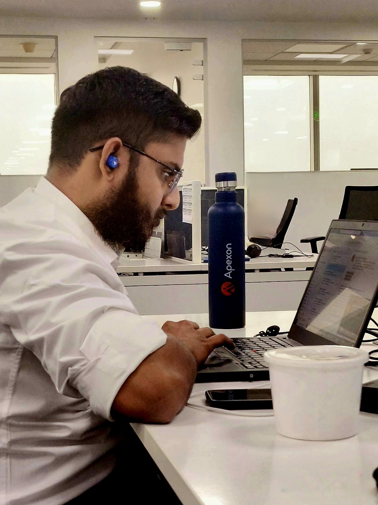

About Me...

- VishnuMoaanKannan...
Master of Business Administration in Human Resource Management from Bharathiar University 2021
Bachelors of Science in Information Technology from SNR Sons College, 2017
Diploma in Client & Server Technology from SNR Sons College, 2016
HSC from Premier Vidyaa Vikash Matric, 2014
SSLC from Premier Vidyaa Vikash Matric, 2012
Postman-API Testing from Udemy, Sep-2023
Google IT Automation with Python Specialization from Google, Nov-2022
JIRA Fundamentals Badge from Atlassian, Jun-2022
Selenium WebDriver with Java + Framework from Udemy, Oct-2021
Cucumber with Java + Framework from Udemy, Oct-2021
Protractor Angular Testing + Framework from Udemy, Oct-2021
Eager to learn new things and technologies
Promised alumini of SNR Sons College. Providing seminars and lectures to the juniors on new technologies and guiding them for successfull carrer
Member of Syllabus framing committee in SNR Sons College Department of IT
Music is one other world that makes me always to be in cloud nine.
Nature lover, enjoys waterfalls, forest, seashore..
Hey Hai !!!
I am Vishnu Moaan. An young, energytic software professional specialised in automation testing. Holding the experience of about 5 years, always wish to make the system do my job and enjoy commanding it. Graduated in Information Technology, I started working in differnet MNC and gained experience and expostutre in different tools and technologies. Being a perfectionalist prefer to do my duty on time and always have thirst to learn new technologies.
Education...
Certifications...
Other Intersts...